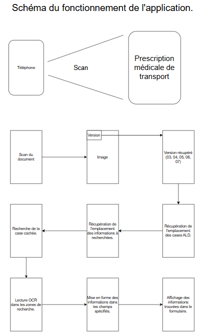
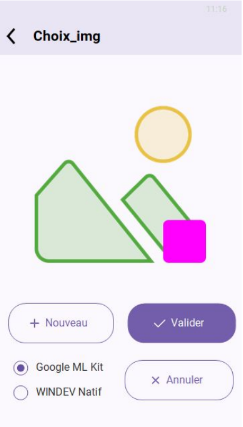
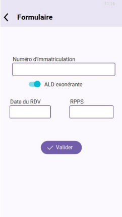
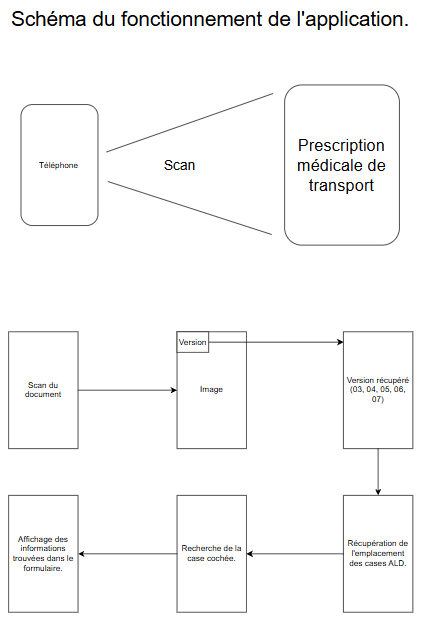
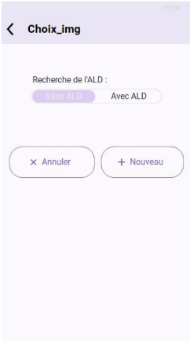
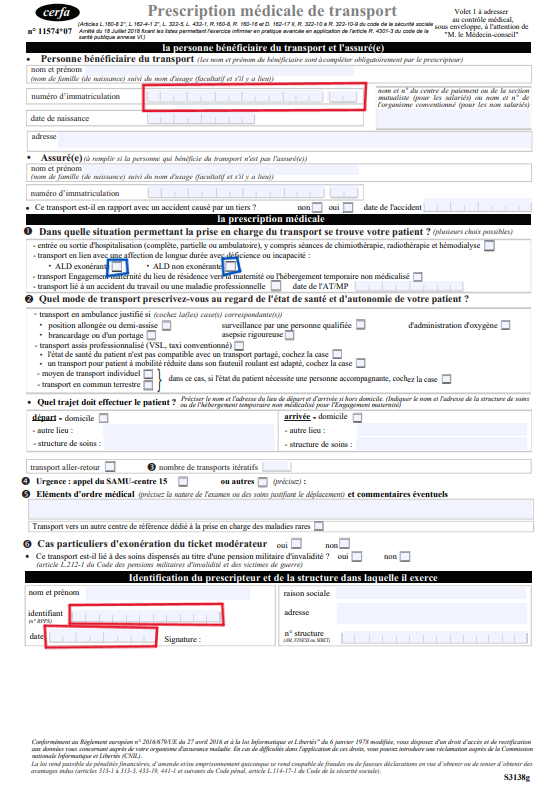

Ce projet aura pour but de s'inscrire dans l'application Ambges de l'entreprise SCR Informatiques,
cette application permet aux soignants de gérer les patients de l'hôpital.
Elle va permettre aux médecins de récupérer les informations d'une prescription médicale de transport des
patients. Les informations sont le numéro de sécurité sociale du patient, l'ALD exonérante ou non,
l'identifiant du médecin et la date de la prescription. Une fois récupérées, elles peuvent être envoyées
à la sécurité du travail pour avoir les informations du transport.
| B1 | B2 | B3 |
|---|---|---|
| B1.2 : Répondre aux incidents et aux demandes d'assistance et d'évolution | B2.1 : Concevoir et développer une solution applicative | B3.1 : Protéger les données à caractère personnel |
| B1.4 : Travailler en mode projet | B2.2 : Assurer la maintenance corrective ou évolutive d'une solution applicative | B3.2 : Préserver l'identité numérique de l'organisation |
| B1.5 : Mettre à disposition des utilisateurs un service informatique (orienté utilisateurs) | ||
| B1.6 : Organiser son développement professionnel |
| Technologies | Intérêts | Limites |
|---|---|---|
| JavaScript (Tesseract & Jscanify) | Permet de faire un scan d'un document et de récupérer le texte avec de l'OCR. | Résultats aléatoires et désordonnés. Texte écrit à la main non trouvé. |
| WinDev | Possède de nombreuses fonctions OCR et de scan. Permet de créer une application pour Android et iOS. |
L'OCR est parfois limité. Les informations trouvables dans des cases sont complexes à calibrer. |
| Intelligence artificielle | Permettrait d'avoir une bonne lecture des informations et de rendre plus simple la détection de cases cochées. | Option non retenue car non envisageable pour le respect du RGPD (données sensibles). |
1) Le scan de la prescription médicale de transport.
2) La récupération de la version du document.
3) La récupération de l'emplacement des cases ALD.
4) La récupération de l'emplacement des informations du patient ou du médecin.
5) Définir laquelle des deux cases est cochée.
6) La récupération des informations avec OCR dans chaque zone de recherche définie.
7) La mise en forme des informations pour remplir le formulaire.
8) L'affichage du formulaire complet.
Le problème est que les traitements OCR testés (WinDev, Tesseract, Google ML Kit) ne sont pas assez performants lorsqu'il s'agit de scan.
Schéma du fonctionnement — v1

Rendu de la première version

Rendu de la recherche d'informations

Schéma du fonctionnement final

1) Le scan de la prescription médicale de transport.
2) La récupération de la version du document.
3) La récupération de l'emplacement des cases ALD.
4) Définir laquelle des deux cases est cochée.
5) L'affichage du formulaire complet.
Dernière version de l'application

Type de document testé :
Les informations à récupérer sont les suivantes :
— Le numéro d'immatriculation (numéro de sécurité sociale)
— L'affection de longue durée (exonérante ou non exonérante)
— L'identifiant du médecin (RPPS)
— La date de la prescription
Prescription médicale de transport

• Découverte de WinDev pour la création d'applications.
• L'utilisation de bibliothèques externes.
• Meilleure compréhension de l'OCR.
• Apprendre à mieux expliquer quelque chose de technique sans aller dans les détails techniques.
• Avoir une meilleure compréhension du code.
• Avoir une meilleure compréhension sur les directives données.